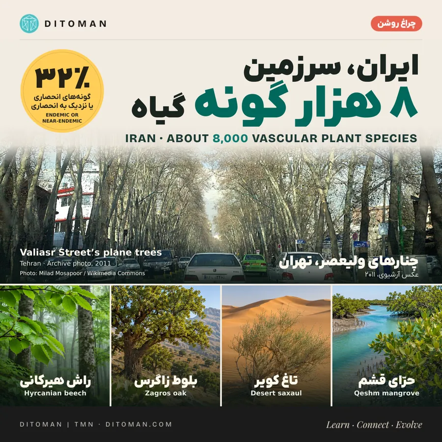
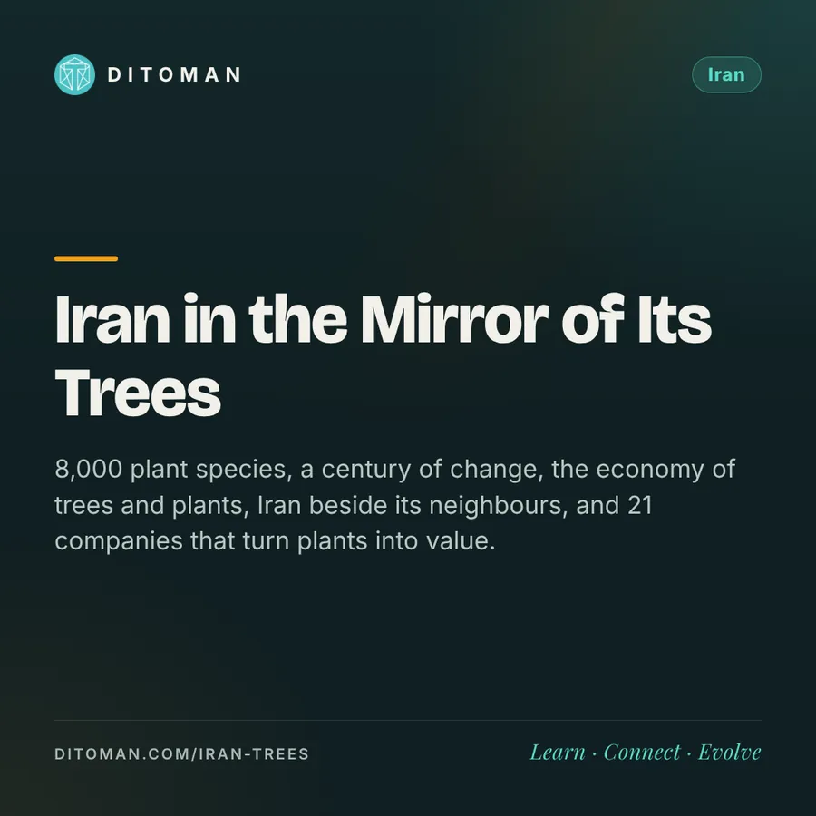
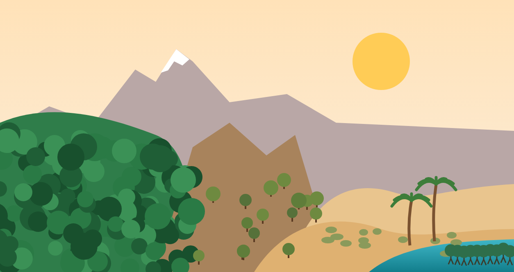

ایران در آینهی درختان؛ از چنار تهران تا حرای قشم
Iran in the mirror of its trees: from Tehran's plane trees to Qeshm's mangroves
8,000 plant species, a century of change, the economy of trees and plants, Iran beside its neighbours, and 21 companies that turn plants into value.
۸ هزار گونهی گیاهی، صد سال تغییر، اقتصاد درخت و گیاه، ایران کنار همسایهها و ۲۱ شرکتی که از گیاه ارزش میسازند.

اگر قرار بود شهرت را فقط با یک درخت معرفی کنی، کدام را انتخاب میکردی؟
در خیابان ولیعصر، چنار را از سایهاش میشناسیم. در دامنههای زاگرس، بلوط را از شکل تپههایی که درختها رویشان پراکندهاند. در قشم باید زمان جزر را بدانیم تا ببینیم حرا چطور در گِلِ ساحل ریشه دوانده است. این سه تصویر، سه راه متفاوت برای زندگی با آباند. ایران با حدود ۸ هزار گونهی گیاه آوندی، یکی از غنیترین فلورهای خاورمیانه را دارد. برای فهمیدن آنچه در یک قرن بر سر این ثروت آمده، کنار باران و دما باید سراغ تاریخ زمین، کشاورزی، جنگ، جابهجایی مردم و اقتصاد هم رفت.
۱. عددهای کلیدی؛ دقیقاً چه چیزی را میشماریم؟
| عدد | معنی آن |
|---|---|
| ۸٬۱۱۲ گونهی گیاه آوندی بومی | شامل گیاهان علفی، سرخسها، بوتهها و درختان (نوروزی و همکاران، ۲۰۱۹). برآوردهای قدیمیتر فائو: حدود ۸٬۲۰۰ گونه [۱، ۶] |
| ۲٬۵۹۷ گونهی انحصاری یا نزدیک به انحصاری (۳۲٪) | ۸۸٪ آنها در ناحیهی ایرانیتورانی و ۴۵٪ فقط در زاگرساند؛ نزدیک به سهچهارم به رشتهکوهها محدودند. درخت و درختچه فقط حدود ۳٪ این گروه است [۱] |
| بیش از ۳٬۲۰۰ گیاه آوندی و حدود ۸۰ گونه درخت بومی | در ناحیهی هیرکانی (ایران و جمهوری آذربایجان)، طبق یونسکو و IUCN [۸، ۴۸] |
| ۱۹۰ نام درخت | نامهای یکتای فهرست کشوری BGCI GlobalTreeSearch برای ایران در ۹ نوامبر ۲۰۲۶ [۴۴] |
| ۱۷۴ آرایهی درختی و درختچهای با کاربرد درمانی سنتی | از یک مرور مردمگیاهشناسی؛ کاربرد سنتی ثبت شده، نه اثربخشی بالینی [۳] |
| ۱۰٫۷۵ میلیون هکتار جنگل (۶٫۶٪ خشکی) | رقم ایران در ارزیابی جهانی فائو؛ رقم رسمی سازمان منابع طبیعی ۱۴٫۳ میلیون هکتار است، چون تودههای تُنُک را هم میشمارد [۴، ۴۹] |
فائو برای تعریف جنگل از آستانههای بیش از نیم هکتار، بیش از ۱۰٪ پوشش تاج و توان رسیدن درختان به ارتفاع پنج متر استفاده میکند و کاربری غالب کشاورزی و شهری را کنار میگذارد. بنابراین باغ پسته، پرچین تهران، تاغزار کوتاه و بلوطزار کمتراکم ممکن است در شمارشهای متفاوتی ظاهر شوند. فائو حدود ۵٫۳ میلیون هکتار دیگر را «سایر اراضی جنگلی» حساب میکند. اختلاف ارقام، بهویژه برای جنگلهای باز، بدون بررسی تعریف و سال نقشه قابل تفسیر نیست. [۴، ۶، ۴۴]
۲. از خزر تا دریای عمان، چه چیزی کجا رشد میکند؟
فائو در ۲۰۰۲ پنج ناحیهی جنگلی ایران را چنین برآورد کرد: هیرکانی حدود ۱٫۹ میلیون هکتار، ارسباران ۱۵۰ هزار، ایرانیتورانی ۲٫۹ میلیون، زاگرس ۵ تا ۶ میلیون و خلیج فارس و دریای عمان ۲٫۴ میلیون هکتار. زاگرس بهتنهایی نزدیک ۴۰ تا ۴۴٪ پوشش جنگلی کشور است. مرز رویشگاهها با مرز استانها یکی نیست و گونههای هر ردیف نمونههای شاخص همان چشماندازند. [۶، ۷، ۱۹، ۵۰]
| پهنه | کجا دنبالش بگردیم؟ | درختان و بوتههای شاخص |
|---|---|---|
| هیرکانی و دامنهی شمالی البرز | گیلان، مازندران و گلستان؛ حدود ۲۵ میلیون سال تکامل بیوقفه، میراث جهانی یونسکو از ۲۰۱۹ | راش شرقی، ممرز، انجیلی، توسکای قشلاقی، بلندمازو، پلت، آزاد، لیلکی خزری، سرخدار و شمشاد هیرکانی |
| ارسباران و شمالغرب | درهی ارس در آذربایجان شرقی؛ ذخیرهگاه زیستکرهی یونسکو از ۱۹۷۶ با بیش از هزار گونهی گیاهی | بلوط قفقازی، ممرز، افرا، زالزالک و درختچههای میوهی وحشی |
| زاگرس شمالی | آذربایجان غربی، کردستان، کرمانشاه | بلوط ایرانی، ویول، دارمازو، بنه، کلخونگ و زالزالک |
| زاگرس میانی و جنوبی | لرستان، ایلام، چهارمحالوبختیاری، کهگیلویهوبویراحمد، ارتفاعات خوزستان و فارس | بلوط ایرانی، بنه، بادامهای وحشی، کیکم و زالزالک |
| البرز جنوبی و کوههای داخلی | تهران، البرز، قزوین، زنجان و سمنان | ارس، بادام وحشی، زرشک، شیرخشت، گونهای چوبی و بوتههای بالشتکی |
| خراسان و کپهداغ | خراسان شمالی و رضوی | ارس، پستهی وحشی (حدود ۲۰ هزار هکتار در سرخس و خواجه)، بادام وحشی، زرشک و گون |
| فلات مرکزی، کویر و حاشیهی لوت | قم، اصفهان، سمنان، یزد، کرمان و خراسان جنوبی | تاغ و اسکنبیل در بستر شنی، گز و شورپسندها، درمنه و گون در استپها |
| جنوب و جنوبشرق خشکی | خوزستان، بوشهر، هرمزگان، جنوب فارس و کرمان، سیستانوبلوچستان | کنار، آکاسیا، گز و کهور؛ نخل خرما در نخلستان و آبادی |
| سواحل و خورهای جزرومدی | قشم و خمیر، دیگر بخشهای هرمزگان، بوشهر و مکران | حرا و در برخی نقاط چندل؛ حدود ۱۳٬۲۰۰ هکتار، که ۹٬۸۰۰ هکتارش در قشم و خمیر است |
برای مقایسهی دقیق استانی باید فهرست گونهها را به نمونههای هرباریومی، محل ثبت و تاریخ مشاهده پیوند داد. یک مشاهده در یک استان به معنی حضور فراگیر در سراسر استان نیست. [۶، ۷، ۸، ۹، ۱۰، ۱۱، ۲۴، ۵۱]
۳. درختهایی که با آنها زندگی میکنیم
- چنارهای ولیعصر. خیابان در ۱۳۰۱ تا ۱۳۰۶ ساخته شد و در ۱۳۱۸ دستور کاشت حدود ۶۰ هزار چنار در آن داده شد. شمار امروز در منابع با هم نمیخواند: یک شمارش در ۱۳۸۱ حدود ۱۱٬۵۰۰ و ثبت بعدی کمی بیش از ۸ هزار اصله گزارش کرده است. مطالعهی دانشگاهی خود خیابان گونه را چنار شرقی ثبت کرده است. چنار را از پوست ورقهورقه و برگ پنجهایاش بشناس. [۳۰، ۳۱، ۵۲]
- چهارباغ اصفهان. خیابانی که از حدود ۱۵۹۷ میلادی در دورهی شاهعباس با ردیفهای چنار، سرو و کاج کشیده شد. [۵۳]
- سرو ابرکوه و درختان دیرزیست. سرو ابرکوه حدود ۴ هزار سال سن دارد و از کهنترین درختان زندهی جهان است. پروندهی پیشنهادی «درختان دیرزیست ایران» در فهرست موقت یونسکو بیش از ۲ هزار درخت کهنسال را معرفی میکند؛ از جمله سرو سنگان (حدود ۳ هزار سال)، ارسهای شهرستانک و ابرسج (۲٬۷۰۰ تا ۲٬۸۰۰ سال)، چنار گراب در البرز (۷۵۰ تا ۸۰۰ سال) و گردوی کلوسه (حدود ۹۰۰ سال). باغ ارم شیراز هم بخشی از اثر جهانی «باغ ایرانی» است. [۴۷]
- پرچین بزرگراه و پارک. «شمشاد» در گفتار شهری ممکن است به چند بوتهی زینتی هرسشده اشاره کند، از جمله ترون یا برگنو از جنس Ligustrum و شمشاد ژاپنی از جنس Euonymus. اینها با شمشاد هیرکانی جنگل شمال (Buxus) فرق دارند. بدون دادهی کاشت یا شناسایی میدانی، سهم هر گونه در بزرگراههای تهران معلوم نیست. [۲۰، ۳۲، ۳۳، ۵۴]
- از قشم تا سفره. پستهی وحشی شمالشرق، نخل خوزستان، کنار جنوب و زرشک خراسان چهار داستان متفاوت از پیوند گیاه و معیشتاند. [۳، ۱۰، ۱۱، ۱۷]
۴. یک قرن تغییر
| دوره | شواهد و معنی آنها |
|---|---|
| ۱۲۹۹ تا ۱۳۳۰ (دههی ۱۹۲۰ تا ۱۹۵۰) | نخستین ادارهی جنگل در ۱۹۲۰ و بنگاه جنگل در ۱۹۴۸ شکل گرفت. اسناد تاریخی از برداشت چوب و سوخت و توسعهی زراعت حرف میزنند و برای این دههها فقط برآوردهای پراکنده داریم. [۱۲، ۱۳] |
| ۱۳۳۰ تا ۱۳۵۵ | جنگلها در دی ۱۳۴۱ ملی اعلام شدند. عکس هوایی و سپس لندست امکان مقایسهی برخی مناطق را دادند. برای هیرکانی ارقام تاریخی ۳٫۶ میلیون هکتار در ۱۹۴۲، ۳٫۴ میلیون در ۱۹۶۴ و حدود ۱٫۹ میلیون در ۱۹۹۰ گزارش شده؛ این ارقام از روشها و مرزهای متفاوت آمدهاند و برای محاسبهی درصد دقیق افت به کار نمیروند. تاغکاری در کویر از ۱۳۴۴ شروع شد. [۱۴، ۵۵، ۶۳] |
| ۱۳۵۵ تا ۱۳۶۸ | شهرنشینی ادامه یافت و جنگ ایران و عراق به بعضی زیستبومهای مرزی و نخلستانهای خوزستان خسارت زد. در سردشت، عکسها و نقشهها تغییر کاربری را نشان میدهند. [۱۵، ۱۷، ۱۸] |
| ۱۳۶۹ تا ۱۳۸۸ | بهرهبرداری تجاری چوب در شمال در ۱۹۹۶ به اوج رسید و بعد کاهش یافت. زوال بلوط زاگرس با خشکسالی ۱۳۷۸ تا ۱۳۸۰ شروع شد. تا ۱۳۸۲ حدود ۲ میلیون هکتار بوتهکاری بیابانی انجام شده بود. [۴، ۱۴، ۱۶، ۵۵، ۵۶، ۶۳] |
| ۱۳۸۹ تا ۱۴۰۵ | مطالعات زوال بلوط فشار خشکسالی، گرما، چرای دام و کاربری زمین را ثبت کردند. شبپرهی شمشاد از ۱۳۹۵ در جنگل شمال پیدا شد. طرح تنفس جنگل، یعنی ممنوعیت قطع درخت در هیرکانی، از ۱۳۹۶ اجرا شد. ثبت جهانی هیرکانی در ۲۰۱۹ با گسترش فرامرزی در ۲۰۲۳ دنبال شد. دادهی ماهوارهای Global Forest Watch برای ۲۰۰۱ تا ۲۰۲۳ فقط ۳٬۶۸۲ هکتار (۰٫۲۹٪) کاهش جنگل در سه استان شمالی نشان میدهد و IUCN وضعیت را «نسبتاً پایدار» میداند. [۸، ۱۲، ۱۹، ۲۰، ۴۸، ۶۴، ۶۶] |
اعداد ملی را چطور بخوانیم؟ سری FRA 2025 برای ایران در سالهای ۱۹۹۰، ۲۰۰۰، ۲۰۱۰، ۲۰۲۰ و ۲۰۲۵ همگی حدود ۱۰٫۷۵ میلیون هکتار گزارش میکند. این یک سری ثابتِ گزارششده است و از آن نمیتوان دربارهی ثابت ماندن تاجپوشش، زادآوری یا ترکیب گونهای داوری کرد. گزارش تاریخی بانک جهانی برآورد ۱۷٫۵ میلیون هکتار در ۱۹۶۰ و ۱۲٫۲ میلیون در حوالی ۱۹۹۰ را نقل میکند؛ این برآورد قدیمی به سری فائو وصل نشده است. مطالعهی سردشت نمونهی مکمل است: در محدودهی مطالعه، جنگل باز و متراکم از ۱۹۵۵ تا ۲۰۲۲ حدود ۱۱٬۲۱۵ هکتار کاهش یافت؛ این مشاهدهی محلی برآورد کل زاگرس نیست. [۴، ۱۵، ۲۱]
۵. آبوهوا، آتش، جنگ و مهاجرت چه اثری گذاشتند؟
گرما و آب. تحلیل ایستگاههای هواشناسی، با مقایسهی ۱۹۷۶–۲۰۰۰ و ۲۰۰۱–۲۰۲۴، حرکت بخشی از ایران بهسوی اقلیم گرمتر و خشکتر را نشان میدهد؛ الگو در سراسر کشور یکسان نیست. [۴۶] زاگرس حدود ۶ میلیون هکتار در ۱۱ استان است؛ در ۱۳۸۹ بیش از ۸۰٪ و در ۱۳۹۶ بیش از ۷۰٪ آن در خشکسالی بود. مقامهای سازمان منابع طبیعی از تخریب حدود یک میلیون هکتار در یک دهه گفتهاند. در لرستان، دادههای ۱۹۵۸ تا ۲۰۲۲ نشان میدهند خشکسالی طولانی و دما همراه با توپوگرافی و کاربری زمین با زوال بلوط ارتباط داشتهاند. [۱۹، ۵۶، ۵۷] پژوهشی در PNAS کاهش ذخیرهی آب زیرزمینی کشور را در ۲۰۰۲ تا ۲۰۱۵ حدود ۷۴ میلیارد مترمکعب برآورد کرد. [۲۲]
آتش و گرد و غبار. از ۱۳۹۰ تا ۱۴۰۰ حدود ۲۲۸ هزار هکتار جنگل و مرتع سوخت، یعنی سالی حدود ۲۰ هزار هکتار؛ ۱۳۹۹ با حدود ۴۸ هزار هکتار بدترین سال بود. کانونهای داخلی گرد و غبار به گزارش برنامهی توسعهی ملل متحد بیش از ۵ میلیون هکتار در ۲۳ استان است. [۵۸، ۵۹]
جنگ و جغرافیای خسارت. خسارت به نخلستانهای خرمشهر و آبادان روشنترین سرنخ عمومی است. تسنیم در ۱۳۹۴ رقم نابودی ۷۰٪ نخلهای خرمشهر را از یک گزارش محلی نقل کرد؛ این عدد به محدوده و خط پایهی همان گزارش وابسته است و برای کل خوزستان به کار نمیرود. مینهای باقیمانده در استانهای غربی یک میراث مستند جنگاند و به گفتهی گروههای داوطلب محلی، اطفای حریق در جنگلهای مرزی را خطرناکتر میکنند. برای اثر درگیریهای جدیدتر بر گونههای چوبی، دادهی ملی قابلمقایسه پیدا نشد. [۱۷، ۱۸، ۲۵، ۶۵]
روستا و شهر. در سرشماری ۱۳۳۵ حدود ۳۱٫۴٪ جمعیت ایران شهری بود؛ در ۱۳۵۵ حدود ۴۷٪ و در ۱۳۹۵ حدود ۷۴٪. [۲۶] دو سازوکار مستند به پوشش گیاهی وصل میشوند: - سوخت. در سه روستای لرستان، جایی که سوخت جایگزین نبود هیزم ۹۲٫۳٪ انرژی خانوار را میداد. با رسیدن گاز لولهکشی، گاز ۶۸٫۲٪ انرژی را تأمین کرد و کل مصرف انرژی حدود ۷۵٪ کم شد. [۶۰] - دام. در گیلان هر واحد دامی سالانه حدود ۴۸۰ نهال میخورد؛ پژوهشگران چرا را مانع اصلی زادآوری طبیعی میدانند. [۶۱]
کاهش برداشت هیزم یا فشار دام در برخی روستاها به نهالها فرصت میدهد، به شرط اینکه زمین دوباره شخم نخورد یا نسوزد. در جاهای دیگر، جاده، ویلاسازی، توسعهی کشاورزی یا رشد حاشیهی شهر اثر معکوس دارد. برای اثر خالص مهاجرت بر جمعیت هر گونهی چوبی، سری ملی همسان در دست نیست. [۱۶، ۲۷، ۲۸]
آفت. در جنگل هیرکانی، شمشاد از بیماری بلایت و حملهی شبپره آسیب دیده است. شبپره نخستین بار در ۱۳۹۵ گزارش شد و تلهگذاری فرمونی از ۱۳۹۶ آزمایش شد. باغ گیاهشناسی ملی ایران دربارهی حفاظت خارج از رویشگاه آن پژوهش کرده است. [۲۰، ۶۶]
۶. کاشتن و نگهداشتن
- بیابان. از ۱۳۴۴ کار مهار شن روان شروع شد. بیش از یک میلیون هکتار جنگل دستکاشت تاغ و بیش از ۱٫۳ میلیون هکتار کمربند حفاظتی در پنج دهه ساخته شده است. [۶۲، ۶۳]
- حرا. هستهی جنگلهای حرای ایران حدود ۱۳٬۲۱۴ هکتار است و با رویشگاههای بالقوه به حدود ۲۶٬۵۰۰ هکتار میرسد. خور خوران از ۱۹۷۵ سایت رامسر و از ۱۹۷۶ ذخیرهگاه زیستکرهی یونسکو است. [۱۰، ۵۱]
- ممنوعیت قطع درخت. طرح تنفس جنگل از ۱۳۹۶ قطع درخت و حتی خارج کردن درخت افتاده را در هیرکانی ممنوع کرد. به گزارش مهر، طرح جامع مدیریت هنوز در مرحلهی مطالعه است و طرحهای خروج دام و جایگزینی هیزم کند پیش رفتهاند. [۴۸، ۶۴]
- کاشت یک میلیارد درخت. برنامهای که از ابتدای ۱۴۰۲ اجرا شد. تیتر مهر در آذر ۱۴۰۴ از کاشت ۳۵۰ میلیون نهال گفت؛ نرخ زندهمانی منتشر نشده و کارشناسان دربارهی آب لازم پرسش دارند. [۷۰]
یک کمربند سبز کاشتهشده میتواند شن روان را مهار کند، سایه بسازد یا جایی برای پرندگان فراهم کند. در عین حال انتخاب گونه، نیاز آبی، نگهداری و بقای چندساله تعیین میکند پروژه چه ارزشی دارد. شمار نهال کاشتهشده و بقای یک جمعیت وحشی دو سنجهی جداگانهاند. [۲۰، ۲۹]
۷. راهنمای شناخت و کاربرد گونهها
این جدول برای خواندن چشمانداز و شناخت کاربردهای غذایی، معیشتی، فرهنگی و بومشناختی است. مرور مردمگیاهشناسی کاربردهای سنتی را ثبت کرده و دادههای بالینی را برای همهٔ آنها ارزیابی نکرده است. در این گزارش ادعای اثربخشی درمانی یا دستور مصرف نیامده است. نامهای محلی ممکن است برای چند گونه به کار بروند و نامهای علمی با بازبینی ردهبندی تغییر کنند. [۳، ۵–۱۱، ۱۹، ۲۹–۳۵]
| درخت یا بوته | نام علمی | نقش و پیوند با زندگی روزمره |
|---|---|---|
| چنار شرقی | Platanus orientalis | برگ پنجهای و پوست لکهلکه، سایهٔ گسترده در خیابان و باغ؛ نمونهٔ آشنا در ولیعصر |
| راش شرقی | Fagus orientalis | سازندهٔ تاجپوشش در بخشهایی از هیرکانی؛ با سایه و برگریزه، ریززیستگاه جنگل را شکل میدهد |
| ممرز | Carpinus betulus | درخت پهنبرگ جنگل شمال و شمالغرب؛ بخشی از ساختار تودههای مختلط |
| انجیلی | Parrotia persica | رنگ پاییزی شاخص؛ از درختان شاخص هیرکانی |
| پلت | Acer velutinum | افرای بزرگبرگ جنگل خزری؛ بخشی از ترکیب پهنبرگان شمال |
| توسکای قشلاقی | Alnus glutinosa | در نقاط مرطوب و کنارههای مناسب؛ ریشههای توسکا با باکتریهای تثبیتکنندهٔ نیتروژن همزیستی دارند |
| بلندمازو | Quercus castaneifolia | از بلوطهای شاخص شمال؛ میوهٔ بلوط بخشی از شبکهٔ غذایی جنگل است |
| آزاد | Zelkova carpinifolia | درخت بازماندهٔ جنگلهای خزری و قفقازی؛ ارزش حفاظتی و ژنتیکی |
| لیلکی خزری | Gleditsia caspica | درخت خاردار و بازماندهی دوران سوم زمینشناسی در جنگل شمال |
| سرخدار | Taxus baccata | سوزنیبرگ سایهپسند و باارزش حفاظتی؛ در جنگل شمال |
| شمشاد هیرکانی | Buxus sempervirens در ردهبندی Kew؛ در منابع ایران B. hyrcana | همیشهسبزِ زیرآشکوب؛ مطالعهٔ حفاظت از این جمعیتها با شناخت نام علمی و مترادفهایش آسانتر است |
| بلوط قفقازی | Quercus macranthera | درخت شاخص بعضی رویشگاههای کوهستانی شمال و شمالغرب؛ حضور آن محدود به مرز سیاسی ایران نیست |
| بلوط ایرانی | Quercus brantii | درخت شاخص زاگرس؛ آرد میوهی بلوط در سالهای کمآذوقه نان لرها و کردها بود و پوست و مازو در دباغی و رنگرزی به کار میرفت [۳۴، ۶۷] |
| دارمازو | Quercus infectoria به معنای رایج در منابع منطقهای | مازوی بعضی بلوطها منبع سنتی تانن برای رنگرزی و دباغی است |
| ویول | Quercus libani | نمونهای از تنوع بلوط در غرب ایران و فراتر از مرز غربی |
| بنه | Pistacia atlantica به معنای گسترده | مغز یا صمغ در کاربردهای محلی شناخته شدهاند؛ جمعیتهای وحشی ذخیرهٔ ژنتیکیاند |
| کلخونگ | Pistacia khinjuk | پستهسانِ وحشیِ دامنههای خشک و سنگی؛ پراکنش فرامرزی |
| پستهٔ وحشی | Pistacia vera | تودههای باز شمالشرق ایران نمونهای از خویشاوندی رویشگاه وحشی با محصول آشنای باغیاند |
| بادام وحشی | Prunus scoparia و گونههای دیگر | در دامنهٔ خشک و سنگی؛ گلدهی بهاره و تنوع ژنتیکی خویشاوندان بادام باغی |
| کیکم | Acer monspessulanum به معنای گسترده | افرای رویشگاههای کوهستانی؛ نام محلی در چند منطقه کاربرد دارد |
| زالزالک | Crataegus spp. | گل برای حشرات و میوه برای پرندگان و برداشت محلی؛ شناسایی گونه در این جنس اهمیت دارد |
| ارس | Juniperus spp. | سوزنیبرگِ ارتفاعات خشک و سرد؛ تشکیل تودههای باز در بعضی کوهها |
| زرشک | Berberis spp. | بوتهٔ خاردار با میوهٔ شناختهشده؛ زرشکِ تجاری خراسان جنوبی را باید از فهرست گونههای وحشی جدا ثبت کرد |
| گونهای چوبی | Astragalus spp. | از برخی گونهها کتیرا به دست میآید که در دارو و آرایشی کاربرد دارد؛ گزانگبین، شیرینیِ گزِ اصفهان، از گون A. adscendens است و تولیدش فقط در ایران گزارش شده [۳۵، ۶۸] |
| درمنهٔ دشتی | Artemisia sieberi | بوتهٔ معطر و شاخص برخی استپهای خشک؛ یکی از نشانههای چشماندازهای کمدرخت |
| اسکنبیل | Calligonum spp. | بوتههای ماسهدوست؛ بخشی از پوشش طبیعی بعضی تپههای شنی |
| تاغ | Haloxylon spp. | سازگار با شرایط خشک؛ بیش از یک میلیون هکتار آن برای تثبیت شن کاشته شده، پس منشأ هر توده را جدا بررسی میکنیم [۶۲] |
| گز | Tamarix spp. | برخی گونهها در خاک و آب شور تاب میآورند؛ در حاشیهٔ رودها، شورزارها و بعضی بادشکنها |
| کنار | Ziziphus spina-christi | سایه، میوه و گلِ مورد استفادهٔ زنبور؛ درخت آشنای جنوب |
| نخل خرما | Phoenix dactylifera | میوه، درآمد باغی و حافظهٔ فرهنگی جنوب؛ در این گزارش نخلستان یک سامانهٔ کشاورزی است |
| حرا | Avicennia marina | ریشههای تنفسی و سازگاری با شوری؛ زایشگاه ماهی و میگو و زیستگاه پرندگان |
| چندل | Rhizophora mucronata | در بخشهایی از ساحل جنوب و مکران؛ ریشههای نگهدارنده از ویژگیهای قابل مشاهدهٔ آن است |
| سرو | Cupressus sempervirens | سرو ابرکوه با حدود ۴ هزار سال؛ نماد باغ ایرانی و نقشمایهی بتهجقه |
| ترون یا برگنو | Ligustrum spp.؛ از جمله L. ovalifolium در تجارت زینتی | بوتهٔ هرسپذیر برای پرچین؛ گونهٔ واقعی هر کاشت را باید از روی برگ، گل یا فهرست کاشت تعیین کرد |
۸. اقتصاد درخت و گیاه: درآمد، صادرات، واردات و کار
گیاه در ایران فقط منظره نیست؛ کارخانه، کارگاه، صادرات و میلیونها شغل به آن وصل است. اما باید دو چیز را جدا کرد: محصولاتی که از جنگل و مرتع طبیعی میآیند (کتیرا، گزانگبین، بنه، گیاهان دارویی وحشی) و محصولاتی که از باغ و مزرعه میآیند (پسته، زعفران، خرما، زرشک). رقمهای زیر از منابع رسمی و رسانههای اقتصادی است؛ هرجا رقم ادعای مقام رسمی است یا منابع اختلاف دارند، همین را گفتهایم.
صادرات محصولات گیاهی
| محصول | صادرات | سال | خاستگاه |
|---|---|---|---|
| پسته | ۱٫۷ میلیارد دلار (۱۴۳٪ رشد)؛ ایران دومین صادرکنندهی جهان پس از آمریکا | سال منتهی به اسفند ۱۴۰۳ | باغ [۷۶، ۷۷] |
| گیاهان دارویی (با زعفران) | حدود ۵۵۰ میلیون دلار؛ ۶۰٪ زعفران و ۴۰٪ سایر گیاهان (ادعای رسمی) | ۱۴۰۲ | مزرعه و مرتع [۷۸] |
| خرما | ۳۹۰ هزار تن، ۳۴۵ میلیون دلار | ۱۴۰۲ | نخلستان [۷۹] |
| زعفران | ۱۸۵ میلیون دلار (پس از ۲۰۸ میلیون در سال قبل) | ۱۴۰۳ | مزرعه [۸۰، ۸۱] |
| کتیرا | فقط استان اصفهان حدود ۱۰۰ تن و ۶ میلیون دلار در یک سال؛ رقم ملی پیدا نشد | بیتاریخ | مرتع وحشی [۸۲] |
| زرشک | حدود ۵۸۶ تن به ۲۸ کشور | ۱۴۰۱ | باغ [۸۳] |
| گلاب | کاشان بیش از ۷۰٪ تولید کشور را دارد، با ۲٬۴۰۰ کارگاه سنتی و ۴۷ واحد صنعتی؛ رقم صادرات پیدا نشد | ۱۴۰۳ | مزرعه [۸۴] |
ایران به گزارشها بیش از ۲٬۳۰۰ گونهی گیاه دارویی دارد. در سمنان سالانه حدود ۳ هزار تن گیاه دارویی از مراتع برداشت میشود و نیمی از آن صادر میشود. [۸۵، ۸۶]
چوب و کاغذ: جایی که هنوز واردکنندهایم - کسری چوب. به گفتهی رئیس سازمان منابع طبیعی، کشور سالانه حدود ۱۶ میلیون مترمکعب چوب نیاز دارد؛ حدود ۵٫۵ تا ۶ میلیون مترمکعب در داخل تأمین و حدود ۱۰ میلیون وارد میشود. از ۱۳۹۶ برداشت چوب از جنگلهای طبیعی شمال تقریباً صفر است و چوب داخلی بیشتر از زراعت چوب (صنوبر، اکالیپتوس و چوب باغ) میآید؛ حدود ۶ میلیون مترمکعب در سال. [۸۷، ۸۸] - از کجا میخریم. حدود ۹۰٪ چوب وارداتی الوار است و روسیه تأمینکنندهی اصلی است؛ طبق دادهی کامترید، ۱۲۳ میلیون دلار (۶۶٪) الوار وارداتی ایران در ۲۰۲۲ از روسیه بود. [۸۸، ۸۹] - کاغذ. واردات کاغذ در شش ماه حدود ۲۲۹ هزار تن و ۲۷۰ میلیون دلار بود. در مقابل، تولید کاغذ بستهبندی ۱٫۶ میلیون تن در سال و بیش از نیاز داخلی (۸۵۰ هزار تن) است و مازادش صادر میشود. ۱۵ کارخانهی دستمال کاغذی سالانه ۲۸۰ هزار تن تولید میکنند، تقریباً دو برابر نیاز داخلی، و به عراق، افغانستان و آسیای میانه صادر میکنند؛ ده سال پیش تا ۸۰٪ این کالا وارداتی بود. حدود ۱٬۶۰۰ واحد سلولزی در کشور فعال است. [۹۰، ۹۱] - مبل و صنایع چوب. حدود ۶۵ هزار بنگاه مبلمان با درآمد حدود ۱٫۵ میلیارد دلار (برآورد ۱۳۹۶) فعالاند و فقط ملایر بیش از ۱۵ هزار شاغل در این صنعت دارد. مقامها سهم این صنعت را بیش از ۸٪ اشتغال صنعتی میدانند (ادعای رسمی). صادرات مبلمان در منابع مختلف بین ۳۲ تا ۷۰ میلیون دلار در سال گزارش شده و بیشترش به افغانستان و عراق میرود. تولید داخلی امدیاف از ۱۳٪ مصرف در ۱۳۸۴ به ۳۳٪ در ۱۳۹۲ رسید. [۸۸، ۹۲، ۹۳]
ارزش پنهان: خدمات جنگل. پژوهشی در دانشگاه تهران ارزش خدمات بومسازگان جنگلهای هیرکانی مازندران را برای ۱۴۰۰ حدود ۸۸۵ هزار میلیارد ریال، یعنی حدود ۸۰۰ میلیون ریال در هر هکتار، برآورد کرد؛ معادل حدود ۴۹٪ تولید ناخالص استان. ۷۱٪ این ارزش خدمات تنظیمی است: نگهداشتن آب و خاک، تنظیم هوا و جلوگیری از سیل. [۹۴]
برداشت دیتومان از اقتصاد. ایران در محصولات باغی و گیاهی صادرکنندهی بزرگی است؛ پسته بهتنهایی حدود ۱٫۷ میلیارد دلار ارز آورده است. اما در چوب و خمیر کاغذ هنوز به واردات وابسته است. زراعت چوب در زمینهای کشاورزی، صادرات کاغذ بهداشتی و بستهبندی، و فرآوری گیاهان دارویی بهجای فروش فلهای، سه مسیریاند که دادهها نشان میدهند ظرفیت رشد دارند. این تحلیل دیتومان است، نه پیشبینی رسمی.
۹. ایران کنار همسایهها
ستون جنگل از سری FRA 2025 فائو با پردازش Our World in Data است. ستون گونهها از فهرستها و فلورهای ملی آمده و سال و روش آنها یکی نیست؛ برای ترکیه شمارش «آرایه» است که زیرگونهها را هم میشمارد. ستون آخر شمار نامهای درخت در جستوجوی BGCI در ۹ نوامبر ۲۰۲۶ است. [۴، ۳۶، ۴۴، ۷۱، ۷۲]
| کشور | گیاهان آوندی بومی | گونههای انحصاری | جنگل ۲۰۲۵ (هکتار) | سهم جنگل از خشکی | نامهای درخت در BGCI |
|---|---|---|---|---|---|
| ایران | ۸٬۱۱۲ | ۲٬۵۹۷ (۳۲٪) | ۱۰٬۷۵۱٬۰۰۰ | ۶٫۶٪ | ۱۹۰ |
| ترکیه | حدود ۱۱٬۷۰۰ تا ۱۲٬۱۰۰ | حدود ۳٬۵۰۰ | ۲۲٬۸۰۵٬۷۶۰ | ۲۹٫۶٪ | ۱۹۹ |
| پاکستان | حدود ۵٬۷۰۰ تا ۶٬۰۰۰ | حدود ۴٪ (برآورد قدیمی) | ۳٬۱۹۲٬۴۶۰ | ۴٫۱٪ | ۲۶۰ |
| افغانستان | حدود ۵٬۰۰۰ | حدود ۲۴٪ | ۱٬۲۰۹٬۴۴۰ | ۱٫۹٪ | ۱۲۶ |
| جمهوری آذربایجان | حدود ۴٬۵۰۰ | ۲۱۰ | ۱٬۲۱۳٬۶۶۰ | ۱۴٫۷٪ | ۱۴۱ |
| عراق | حدود ۳٬۳۰۰ | ۱۷۴ (۵٪) | ۶۹۲٬۵۵۰ | ۱٫۶٪ | ۵۱ |
| ترکمنستان | حدود ۳٬۰۰۰ | ۱۷۵ | ۲٬۳۳۰٬۰۰۰ | ۵٫۰٪ | ۶۸ |
| ارمنستان | تأیید نشد | ۱۲۶ تا ۱۴۲ | ۳۳۴٬۱۰۰ | ۱۱٫۹٪ | ۱۳۷ |
| عربستان سعودی | حدود ۲٬۳۰۰ | حدود ۲٫۵٪ | ۲٬۷۷۵٬۵۵۰ | ۱٫۳٪ | ۱۱۳ |
| عمان | حدود ۱٬۲۰۰ | ۹۳ | ۱٬۶۰۰ | کمتر از ۰٫۰۱٪ | ۹۱ |
| امارات | حدود ۶۰۰ | انحصاری ملی ندارد | ۳۲۴٬۵۸۰ | ۴٫۶٪ | ۱۴ |
| کویت | حدود ۳۷۰ | گزارش نشده | ۶٬۳۰۰ | ۰٫۳۵٪ | ۵ |
| قطر | حدود ۳۰۰ | گزارش نشده | ۱٬۴۰۰ | ۰٫۱٪ | ۷ |
| بحرین | تأیید نشد | گزارش نشده | ۴٬۳۷۰ | ۵٫۵٪ | ۳ |
- ایران و کشورهای عربی منطقه. شمار گیاهان بومی ایران حدود ۳٫۵ برابر عربستان، ۷ برابر عمان و بیش از ۱۳ برابر امارات است. مساحت جنگل گزارششدهی ایران نزدیک به ۳٫۹ برابر عربستان و ۱۵٫۵ برابر عراق است و سهم جنگل از خشکی ایران از عراق و هر شش عضو شورای همکاری خلیج فارس بیشتر است، جز بحرین که وسعت کمش ۴٬۳۷۰ هکتار را به بیش از پنج درصد میرساند. ایران بیش از ۲٬۵۰۰ گونهی گیاهی دارد که تقریباً فقط در خاک خودش و اطرافش میروید؛ عربستان حدود ۲۰۰ گونهی انحصاری منطقهای دارد و امارات هیچ گونهی انحصاری ملی ندارد. [۱، ۳۶، ۷۱]
- دقت دربارهی ارقام جنگل. FRA 2025 برای بعضی کشورها بازنگری بزرگی نسبت به FRA 2020 دارد؛ مثلاً در سری ۲۰۲۰ جنگل عربستان حدود ۹۸۰ هزار هکتار (۰٫۴۵٪) و ترکمنستان حدود ۴٫۱ میلیون هکتار بود. برای تفکیک جنگل طبیعی و کاشتهشده باید به گزارش هر کشور رجوع کرد. [۴، ۳۶، ۷۲]
- همسایهای غنیتر از ما. ترکیه با حدود ۱۲ هزار آرایهی گیاهی و بیش از ۳٬۵۰۰ گونهی انحصاری، و جنگلی دو برابر ایران، غنیترین فلور منطقه را دارد. عراق، ایران و ترکیه در شمار غنیترین فلورهای خاورمیانهاند. [۲، ۳۷، ۷۱]
- خودِ منطقه بههم پیوسته است. جنگل هیرکانی در ایران و جمهوری آذربایجان امتداد دارد. زاگرس و کوهستان شمال عراق بلوطها و پستهسانهای مشترک دارند. کپهداغ میان ایران و ترکمنستان یک پهنهی فلوریستیک مشترک است و پاکستان در زیارت جنگلهای ارس ثبتشده دارد. [۸، ۹، ۳۷، ۳۹، ۴۰]
- کمجنگل بودن با کماهمیت بودن فرق دارد. عربستان رویشگاههای ارس کوهستانی دارد. کندر ظفار در میراث جهانی عمان ثبت شده است. حرا و شورپسندهای ساحلی در جنوب خلیج فارس، از جمله امارات، زیستگاههای ارزشمند میسازند. [۱۰، ۳۸، ۴۱–۴۳]
- سبز کردن با سرمایه. همسایههای جنوبی برای جبران اقلیم بیابانی سرمایهگذاری بزرگی کردهاند: عربستان هدف ۱۰ میلیارد درخت را گذاشته و تا فروردین ۱۴۰۵ حدود ۱۵۹ میلیون درخت کاشته و یک میلیون هکتار زمین را احیا کرده است. امارات تا مرداد ۱۴۰۵ به ۵۱٪ هدف کاشت ۱۰۰ میلیون حرا تا ۲۰۳۰ رسیده و قطر هدف ۱۰ میلیون درخت را دارد. مزیت مستند ایران، همزمانی طبیعی جنگل مرطوب خزری، بلوطزار کوهستانی، استپ و بوتهزار کویری و حرای جنوب در یک کشور است. [۷۳، ۷۴، ۷۵]
۱۰. شرکتهایی که از این زنجیره ارزش میسازند
در بخش «شرکتهای ایرانی» دیتومان ۲۱ پروندهی تازه باز کردهایم: کارخانههایی که از چوب، باگاس نیشکر، کاغذ بازیافتی، گل محمدی، زعفران و گیاهان دارویی محصول میسازند. هر پرونده محل، محصول، مقیاس تأییدشده و آنچه هنوز تأیید نشده را با منبع نشان میدهد.
چوب و تخته: نکاچوب (میاندورود، از ۱۹۶۹) · گروه صنعتی پاکچوب · گروه صنعتی نوین چوب (اهواز) · گروه صنعتی عصر نوین (انزلی) · تولید فیبر ایران (از ۱۹۶۶)
کاغذ و مقوا: صنایع چوب و کاغذ مازندران (ساری، ۱٬۳۰۰ کارمند) · چوکا (گیلان) · صنایع کاغذ پارس (هفتتپه، کاغذ از باگاس نیشکر) · کاغذ لطیف · کاغذ کاوه پاپیروس · الماس سبز کویر (یزد) · صنایع کاغذ و مقوای کرمان · کویر مقوای اردستان (بازچرخانی ۹۵٪ آب)
مبلمان: نیلپر (کارخانهی ۴۰ هزار متری پرند) · پادیران (از ۱۹۷۰) · هامون
گیاهان دارویی، زعفران و گلاب: باریج اسانس (کاشان، حدود هزار کارمند) · داروسازی زردبند · درین گلاب کاشان · زعفران سحرخیز (مشهد، از ۱۹۳۲) · زعفران اسفدان
این فهرست کامل نیست و رتبهبندی هم نیست؛ شرکتهایی را آوردیم که منبع عمومی قابلدسترس داشتند. برای نهالستانها و پیمانکاران فضای سبز منبع قابلاتکایی پیدا نکردیم.
۱۱. هنوز چه چیزهایی را نمیدانیم؟
- شمار کل درختان و درختچههای بومی کشور در یک فهرست ملی؛ BGCI فقط درختان را میشمارد.
- سهم واقعی گونهها در پرچین بزرگراهها و شمار امروز چنارهای ولیعصر و درختان تهران.
- مساحت دقیق آسیب شبپرهی شمشاد و نشانههای بازگشت آن.
- اثر خالص مهاجرت روستا به شهر بر پوشش گیاهی، و مساحت آسیب جنگ به جنگلها.
- نرخ زندهمانی نهالهای برنامهی یک میلیارد درخت.
- رقم ملی صادرات کتیرا، آنغوزه و گلاب، و شمار کل شاغلان جنگل و مرتع.
- آمار کامل واردات چوب و کاغذ به تفکیک سال؛ دادهی سراسری در دسترس ما نبود.
۱۲. نگاه دیتومان
ایران در یک کشور، جنگل مرطوب ۲۵ میلیونساله، بلوطزار کوهستانی، استپ، بوتهزار کویری و جنگل حرا دارد؛ ثروتی که بیشتر همسایهها از نظر طبیعی ندارند و حالا با میلیاردها دلار سعی میکنند بسازند. این تنوع هم دارو و غذا و شغل میسازد و هم آب و خاک را نگه میدارد. دادهها نشان میدهند در جنگلهای شمال بعد از دههها کاهش، روند آرامتر شده؛ و مسیرهای امیدبخشی مثل گازرسانی به روستا، زراعت چوب، فرآوری گیاهان دارویی و صادرات پسته و کاغذ پیش روست. نگهداشتن این سرمایه از همان چنار کوچهی خودمان شروع میشود. این مسیر را با هم دنبال میکنیم.
پرسش برای شما: اگر بخواهی شهرت را فقط با یک درخت یا بوته معرفی کنی، اسم کدام را میگویی؟ اگر عکسی داری، نام شهر و محل رویش را هم بنویس.
منابع و دادهها
- نوروزی و همکاران، فهرست و پراکنش گیاهان آوندی انحصاری و نزدیک به انحصاری ایران، ۲۰۱۹. Scientific Reports
- نمایهٔ ملی ایران و برآورد مستقل شمار گونهها. کنوانسیون تنوع زیستی
- مرور کاربردهای سنتی درختان و درختچههای ایران و جدول نامهای محلی. Amiri و همکاران، ۲۰۲۳ · نسخهٔ مقاله و جدول ۱
- تعاریف، دادهها و گزارشهای کشوری ارزیابی منابع جنگلی ۲۰۲۵. FAO FRA 2025 · گزارشهای کشوری
- نامها و مترادفهای گیاهان آوندی. Kew World Checklist of Vascular Plants
- گزارش ملی منابع ژنتیکی جنگل ایران، از جمله جداول گونهها و استانها. گزارش ایران به فائو
- طبقهبندی و معرفی نواحی جنگلی. Sagheb Talebi، Sajedi و Pourhashemi، Forests of Iran
- معرفی و محدودهٔ فرامرزی جنگلهای هیرکانی. یونسکو
- ارسباران و فلور خراسان–کپهداغ. یونسکو، ارسباران · مرور فلور خراسان–کپهداغ
- بومشناسی حرا و چندل. یونسکو، ذخیرهگاه حرا · مرور مانگروهای ایران
- پستهزارهای وحشی خراسان. ترکیب فلوریستیک تودههای باقیماندهٔ پسته · پژوهش جنگل خواجه
- تاریخ مدیریت جنگلهای هیرکانی و طرح تنفس. Forests، ۲۰۲۲
- تاریخ جنگلداری و بهرهبرداری. دانشنامهٔ ایرانیکا
- تغییرات مکانی و زمانی جنگل هیرکانی و برآوردهای تاریخی. iForest، ۲۰۰۹
- مطالعهٔ عکس هوایی و ماهوارهای جنگل بلوط سردشت. Sensors، ۲۰۲۳
- تحلیل محرکهای تغییر کاربری در پهنهٔ هیرکانی. Land Use Policy
- گزارشهای محلی خسارت نخلستان. تسنیم، خرمشهر · تسنیم، خوزستان
- جمعیت آبادان در سرشماریهای ۱۹۵۶ تا ۲۰۱۱. دانشنامهٔ ایرانیکا
- مطالعهٔ لرستان و مرور زوال بلوط ایران. Scientific Reports، ۲۰۲۴ · Forest Pathology
- بلایت و حفاظت شمشاد. EPPO، بلایت · EPPO، شبپره · باغ گیاهشناسی ملی ایران
- برآوردهای تاریخی و گزارش جنگلداری ایران. بانک جهانی، پیوست جنگلداری و مرتع
- برداشت، شوری و افت آب زیرزمینی. PNAS، ۲۰۲۱ · Scientific Reports، ۲۰۲۱
- آب و فشارهای معیشتی در خوزستان. International Crisis Group
- بهروزرسانی ردهبندی فلور ایران و مراجع Flora Iranica و Flora of Iran. FAO AGRIS
- میراث مین و حدود دادههای آلودگی. Mine Action Review، ایران
- سرشماری و شهرنشینی ایران. UNFPA و مرکز آمار ایران · آرشیو سرشماری · جدول ۲۰۱۶
- تغییر کاربری و دمای سطح تهران، ۱۹۸۸ تا ۲۰۱۸. Sustainability
- آثار محلی از دست رفتن جنگل شمال. دانشگاه لیژ
- کاشت درخت و تثبیت چشمانداز در ایران. فائو
- مطالعهٔ میدانی چنار شرقی ولیعصر. پایگاه ویراساینس · نام پذیرفتهشده در Kew
- گزارشهای تاریخی با شمار متفاوت چنار. رادیو زمانه · نقل قول شهردار وقت در ۱۳۹۶
- کاربرد نام ترون و شمشاد در تجارت باغبانی و شناسنامهٔ گونه. برگنو در باغبانی ایران · Kew، Ligustrum ovalifolium
- مترادف شمشاد هیرکانی در ردهبندی Kew. Plants of the World Online
- کاربردهای غذایی سنتی بلوط در ایران. Balanophagy in Iran · دانشنامهٔ ایرانیکا
- تنوع و پراکنش گونهای ایران. Collectanea Botanica
- دادههای باز جدول کشورها. مساحت جنگل، هکتار · سهم جنگل از خشکی · فرادادهٔ مساحت
- تحلیل فلور عراق، کوهستان کردستان و مقایسهٔ منطقهای. Ghazanfar و McDaniel، Edinburgh Journal of Botany
- فهرست و معرفی تنوع گیاهی عربستان. مرکز ملی توسعهٔ پوشش گیاهی عربستان
- نواحی مهم گیاهی ترکیه و فهرست افغانستان. Plantlife، ترکیه · فهرست گیاهان آوندی افغانستان
- جنگل ارس زیارت و تودههای پستهٔ وحشی فرامرزی. یونسکو، پاکستان · پستهزارهای باز آسیای میانه و جنوبغربی
- جغرافیای گیاهی و حفاظت در شبهجزیرهٔ عربستان. Ghazanfar و همکاران، ۲۰۲۴
- زیستگاههای عمان و سرزمین کندر. باغ گیاهشناسی عمان · میراث جهانی یونسکو
- مانگروها و گیاهان ساحلی شورپسند منطقه. مرور مانگروهای خاورمیانه · مطالعهٔ گیاهان شورپسند ساحلی
- فهرست درختان بومی به تفکیک کشور. BGCI GlobalTreeSearch · دادهٔ فهرست ایران
- پژوهشها، مؤسسهٔ تحقیقات جنگلها و مراتع و منابع ثبت مشاهده. پژوهشهای مؤسسه در AGRIS · جستوجوی نمونه و مشاهده در GBIF
- شواهد ایستگاهی دربارهٔ تغییر تیپ اقلیمی و حدهای بارش و دما. Journal of Arid Environments، ۲۰۲۶ · Water، دادههای ۱۹۵۱–۲۰۱۹
-
درختان دیرزیست و باغهای تاریخی. فهرست پیشنهادی یونسکو، درختان دیرزیست · میراث جهانی یونسکو، باغ ایرانی
-
چشمانداز میراث جهانی IUCN، جنگلهای هیرکانی. IUCN World Heritage Outlook
- رقم رسمی ۱۴٫۳ میلیون هکتار و برآورد تخریب سالانه. Tehran Times
- رویشگاههای پستهی وحشی خراسان، حدود ۲۰ هزار هکتار. FAO AGRIS
- مساحت جنگلهای حرای ایران. مجلهی طبیعت ایران
- تاریخچه و شمار چنارهای ولیعصر. Al-Monitor
- چهارباغ اصفهان. دانشنامهی ایرانیکا
- درختچههای پرکاربرد فضای سبز تهران. مطالعهی دانشگاه آزاد
- مساحت تاریخی جنگلهای شمال و اوج بهرهبرداری. Financial Tribune
- زوال بلوط زاگرس و خشکسالی. مجلهی تحقیقات جنگل و صنوبر ایران
- برآورد تخریب یک میلیون هکتار زاگرس. Financial Tribune
- آتشسوزی جنگل و مرتع ۱۳۹۰ تا ۱۴۰۰، بر پایهی سالنامههای مرکز آمار. Iran Open Data
- کانونهای داخلی گرد و غبار. UNDP Iran، ۲۰۲۵
- گازرسانی و مصرف هیزم در روستاهای لرستان. مجلهی تحقیقات جنگل و صنوبر
- چرای دام و زادآوری در گیلان. مجلهی طبیعت ایران
- کمربندهای حفاظتی تاغ. DESERT، ۲۰۲۵
- آغاز تاغکاری و ۲ میلیون هکتار بوتهکاری تا ۱۳۸۲. مجلهی طبیعت ایران
- طرح تنفس جنگل و وضعیت اجرا. خبرگزاری مهر
- مین در جنگلهای مرزی و اطفای حریق. Rudaw
- نخستین گزارش شبپرهی شمشاد و تلهگذاری. مجلهی طبیعت ایران
- بلوط در ایران. دانشنامهی ایرانیکا
- گزانگبین و کتیرا از گون. Tropentag، ۲۰۱۸
- فهرست درختان دیرزیست. یونسکو
- برنامهی کاشت یک میلیارد درخت. ویکیپدیا · خبرگزاری مهر، آذر ۱۴۰۴
- شمار گونههای همسایهها. ترکیه، وزارت محیط زیست · ترکیه، Daily Sabah · عربستان · امارات · کویت، فائو · عراق · آذربایجان، CBD · ترکمنستان · پاکستان · ارمنستان · قطر
- سری FRA 2020 برای مقایسه. شاخص بانک جهانی
- ابتکار سبز عربستان. The Star، ۱۴۰۵
- حرای امارات. Gulf News
- هدف ۱۰ میلیون درخت قطر. The Peninsula
- صادرات پسته ۱۴۰۳. اتاق ایران
- جایگاه جهانی پستهی ایران. USDA، فوریه ۲۰۲۵
- صادرات گیاهان دارویی. اقتصاد آنلاین
- صادرات خرما. FreshPlaza
- صادرات زعفران ۱۴۰۲. Tridge
- صادرات زعفران ۱۴۰۳. اتاق ایران
- صادرات کتیرای اصفهان. Financial Tribune
- صادرات زرشک ۱۴۰۱. Tridge
- گلاب کاشان. Iran Daily
- گیاهان دارویی ایران. Al-Monitor
- برداشت گیاهان دارویی از مراتع سمنان. Frontiers، ۲۰۲۵
- نیاز و کسری چوب کشور. Financial Tribune
- برداشت چوب، واردات و صنعت مبلمان. Iran Daily، بهمن ۱۴۰۳
- واردات الوار و کاغذ بر پایهی کامترید. Trade Bottlenecks
- واردات و تولید کاغذ. Financial Tribune
- کارخانههای دستمال کاغذی. Financial Tribune
- صادرات مبلمان و ملایر. Financial Tribune
- صادرات مبلمان و صنایع چوب. ANA
- ارزش خدمات بومسازگان جنگلهای مازندران. دانشگاه تهران
کاور: عکس چنارهای ولیعصر از Milad Mosapoor، ویکیمدیا (۲۰۱۱)؛ تصاویر پایین کاور و نقاشی چشمانداز، تصویر نمونهاند. آخرین بازبینی: ۱۸ آبان ۱۴۰۵